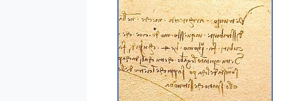
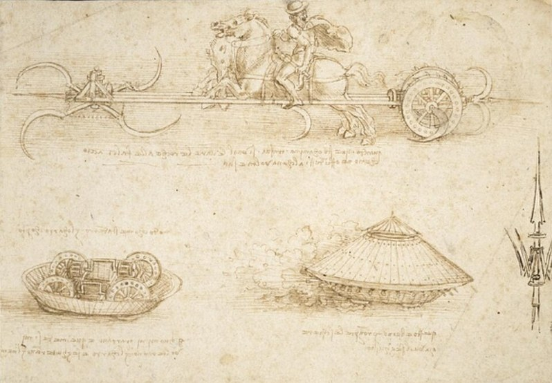
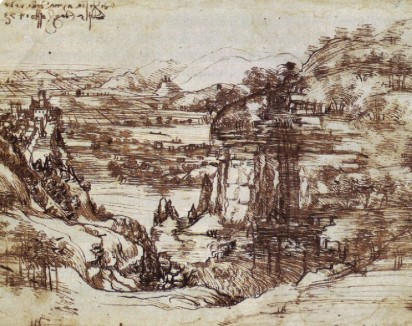
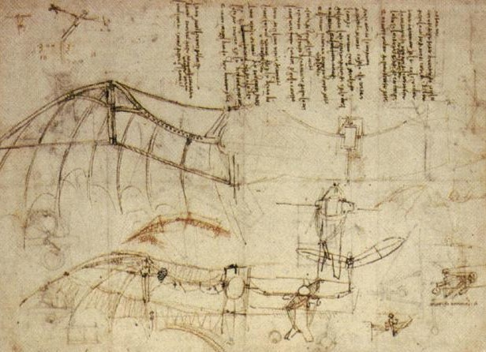
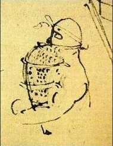

Leonardo da Vinci painted the Mona Lisa. He also designed war machines, measured the human body in fractions, argued about the moon, and wrote riddles to stump his friends. He kept it all in notebooks, written backwards.
About 7,000 of his pages survive. Every quote here is his own, from those pages. Your job is to do what he did: guess, test, measure and argue. Sometimes he was right. Sometimes he was wrong, and you get to catch him.
Your notebook is full
You earned every stamp. Based on the pages you chose first, you think most like
Leonardo left this line on a page, with nothing around it:
In his own words
Tell me if anything was ever done.
Notes for Rocky
He started far more than he finished. He kept asking anyway. Pick one question from your own list on the To-Do page and chase it this week.
The Backwards Hand
Open any of Leonardo's notebooks and the first thing you notice is that you can't read it. He wrote from right to left, with every letter flipped. Hold the page up to a mirror and it turns into normal writing.

He was left-handed, and the most popular explanation is that writing right to left kept his hand from dragging through the wet ink. Nobody knows for sure. Some people think it was a secret code. A mirror beats it in two seconds, so it was a weak code if it was one. A drawing from 1473 has its date in mirror writing and a note on the back written the normal way, so he may have used both hands. People who knew him called him “mancino,” the Italian word for left-handed.
Decode it
Here is a real instruction from his notebook, written his way. Try to read it before you use the mirror.
Try it for real
Write your name backwards on paper, right to left, with every letter flipped. Check it in a mirror. Then try it with your other hand. Which hand is better at it? Time yourself with each. Is the backwards hand slower, or just stranger?
The Job Application
Around 1482 Leonardo was about thirty and wanted a job with the ruler of Milan. He had trained as a painter in Verrocchio's workshop in Florence. That ruler was Ludovico Sforza, nicknamed “il Moro.” A draft of his letter survives. It is a numbered list of what he could do. Later you will test his very first promise with a sheet of paper. First, make a guess.
Guess first
His list has ten numbered skills, then a few extra lines. How many of the ten numbered skills are about war?
In his own words
I will make covered chariots, safe and unattackable which, entering among the enemy with their artillery, there is no body of men so great but they would break them.

Bridges, tunnels, cannons, armored cars and ships fill nine of the ten. Only number ten turns to peace (buildings and water pipes), and painting comes after that:
In his own words
Item: I can carry out sculpture in marble, bronze or clay, and also in painting whatever may be done, and as well as any other, be he whom he may.
The man who would paint the Mona Lisa put painting near the bottom. Milan was often at war, and he wrote for his reader. He ended with a dare: if anything on the list seemed impossible, he would test it for the ruler in his park.
Try it for real
His first promise was "extremely light and strong bridges." Build one from a single sheet of paper across two books a hand apart. How many coins does it hold flat? Now fold the same kind of sheet into a zigzag and test again. Add coins one at a time and count carefully. A fair test changes only the folding.
The Body Ruler
Leonardo read an old Roman architect named Vitruvius, who said the human body follows number rules. Leonardo wrote the rules down and drew the famous man in a circle and a square to test them. Vitruvius said the foot is one sixth of a person's height. Leonardo changed it to one seventh. Who was closer? You will find out. He drew the man around 1490, and he also put the distance from hairline to chin at one tenth of the height.
In his own words
The length of a man's outspread arms is equal to his height.
The foot is the seventh part of the man. The whole hand will be the tenth part of the man. From the elbow to the tip of the hand will be the fifth part of a man.
Run the numbers
| Leonardo's rule | Fraction | Predicted for you |
|---|
Now measure your real arm span, fingertip to fingertip.
Was he right?
Close, on average. Arm span and height match within a few percent for most people. Many modern feet land between his one seventh and the Roman one sixth. These are averages, and nobody's body is a perfect fraction. That includes yours. For the best arm-span measurement, stand with your back to a wall, stretch both arms straight out, and have a helper mark your longest fingertips.
Try it for real
Measure three people at home. Whose foot is closest to one seventh of their height? Whose is furthest off?
The Tree Rule
Leonardo stared at trees long enough to find math in them.
In his own words
All the branches of a tree at every stage of its height when put together are equal in thickness to the trunk below them.
"Put together" is the tricky part. Bundle the branches like a fistful of straws, and the bundle should be as thick as the trunk. In math terms, the areas of the cut ends add up.
Split the trunk
The trunk is 12 cm across. Before you move the slider: if it splits into 4 equal branches, how wide is each one?
Was he right?
Mostly. Measurements of real trees roughly fit his rule, though the data are scattered. One modern computer model suggests why: a tree built this way bends evenly in the wind and is less likely to snap.
He saw the same pattern in rivers. Streams that join make a river as big as all of them together. Try the slider at 9: each branch is 4 cm across, because 9 × 4 × 4 = 144 = 12 × 12.
Try it for real
Find a branch that forks in two. Wrap a strip of paper around each part and mark where it meets. Call the three lengths trunk, A and B. Test whether trunk × trunk is close to A × A + B × B.
The Borrowed Light
In Leonardo's time many people believed the moon glowed with its own light. He disagreed, in writing.
In his own words
The moon has no light in itself; but so much of it as faces the sun is illuminated, and of that illumined portion we see so much as faces the earth.
Move the moon
The sun is far off to the right. Slide the moon around the earth and watch what we see from the ground.
When the moon is a thin crescent, you can sometimes see the rest of it glowing faintly. What lights the dark part?
Was he right?
Yes, and nearly a century early. He wrote that the moon's night side gets light "lent it by our waters as they reflect the image of the sun." That faint glow is sunlight bounced off the earth, now called earthshine. He gave the credit to the oceans. Clouds do most of the work.
On another page, in extra-large letters among his math notes, he wrote one more sentence: "The sun does not move." Nobody knows exactly what he meant by it.
Try it for real
In a dark room, set a lamp on a table as the sun. Hold a ball at arm's length as the moon and turn slowly in a circle. Your head is the earth. Watch the ball go through its phases. The side facing the lamp is always lit. You are only changing how much of that side you can see, and when the ball is opposite the lamp you see all of it, which is how a full moon works.
The Case of the Mountain Shells
High in the Italian hills, far from any coast, people kept finding seashells stuck in the rock. Oysters, corals, the lot. Everyone had a theory. You are the detective.
Pick your suspect
In his own words
The shells, oysters, and other similar animals, which originate in sea-mud, bear witness to the changes of the earth.
...and the ancient bottoms of the seas have become mountain ridges.
Leonardo looked at the evidence. The shells lay in layers, mud over shells over mud. A single flood would dump everything in a jumble, and heavy shells would not ride floodwater up a mountain. So the layers had to form slowly on a sea floor, and the sea floor had to rise.
Was he right?
Yes. Sea floors do become mountains, over millions of years. He had the wrong engine for it, since nobody knew yet about the moving plates of the earth's crust. He still read the rocks correctly about 300 years before geology became a science.
Try it for real
Layer sand, soil and small pebbles in a clear jar of water, one handful at a time, letting each settle. Then shake the jar hard once, like a flood. Which version looks like neat rock layers? In real layered rock the bottom layer formed first, so the layers also tell you the order they were laid down.
Why Far Mountains Turn Blue
Many painters before Leonardo painted distant hills the same green and brown as near ones. He noticed that real hills fade toward blue, and he wanted to know why the sky is blue at all.
In his own words
...the atmosphere assumes this azure hue by reason of the particles of moisture which catch the rays of the sun.
His test used a dark room with a sunbeam coming through a hole. Dust in the beam looked ash grey. Thin smoke in the beam looked "a most beautiful blue."
Paint with air
Slide to put more air between you and the hills. This is the trick behind the hazy background of the Mona Lisa.
Which hill should a painter make the bluest and palest?

Was he right?
Half right. Tiny things in the air do scatter sunlight, and blue light scatters most. The scatterers are mainly the air's own molecules, though, not drops of moisture. His painting rule works perfectly either way.
Try it for real
Stir a few drops of milk into a clear glass of water. Shine a flashlight through the side in a dark room. Look from the side, then from the far end. Which view is bluish, and which is orange? The bluish side view is the same effect as the sky: tiny particles scatter blue light sideways. What gets through to the far end is what is left, which looks orange, like a sunset.
The Prophecies
Leonardo wrote scary-sounding predictions to read aloud at parties. Each one describes something completely ordinary. The fun was watching people guess. Your score counts. Look for the detail that is too gentle, or too ordinary, to belong to a real disaster. That detail is the clue.
Riddle 1 of 4
In his own words
Try it for real
Write your own. Pick something boring, like a toaster or a zipper, and describe it as a terrifying event from the future. Read it to someone and see if they can guess.
The Great Bird
Leonardo watched birds for years and filled pages with wings. He was sure a person could fly, and he wrote about the day it would happen as if it were already famous.
In his own words
The great bird will take its first flight; on the back of his great swan, filling the universe with wonders; filling all writings with his fame and bringing eternal glory to his birthplace.

"The great swan" was probably a hill near Florence with a name that means swan. He wrote this after 1500, when he was past fifty. His machines were mostly powered by a person flapping the wings with arms and legs.
Engineer's call
Why did his flapping machines never get off the ground?
Was he right?
Right dream, wrong engine. People did fly, about 400 years later, with fixed wings and gliding first. That was closer to his later bird notes than to his flapping machines. A human body is too heavy for its muscle power to flap into the air.
Try it for real
Drop a flat sheet of paper and a crumpled one from the same height. Then fold a glider and change one thing at a time: wing size, nose weight, a bent wingtip. Write down what each change does, the way he did. Change only one thing per test, drop each glider from the same height, and test three times before you decide.
The Secret He Wouldn't Tell
Leonardo offered the ruler of Milan armored cars and cannons. Yet one invention he refused to explain to anyone.
In his own words
How by means of a certain machine many people may stay some time under water. How and why I do not describe my method of remaining under water, or how long I can stay without eating;

Your call
You invent a way to stay underwater for a long time. What do you do with it?
In his own words
and I do not publish nor divulge these by reason of the evil nature of men who would use them as means of destruction at the bottom of the sea, by sending ships to the bottom, and sinking them together with the men in them. And although I will impart others, there is no danger in them; because the mouth of the tube, by which you breathe, is above the water supported on bags or corks.
He hid the dangerous version and shared the safe one: a breathing tube whose mouth stays above the water, held up by bags or corks. That is basically a snorkel. Here is the puzzle: this is the same man who advertised catapults. Was he being careful, or inconsistent? People still argue about what inventors owe the world. There isn't one right answer.
Try it for real
Ask two people the question you just answered. Write down their reasons. Did anyone change your mind?
The To-Do List
Leonardo's notebooks are full of notes to himself. Shopping, errands and wild questions sit side by side. These are all real:
In his own words
Describe the tongue of the woodpecker and the jaw of the crocodile.
Learn the multiplication of roots from Maestro Luca.
...a ruler, a very sharp knife, Spectacles...
Maestro Luca was Luca Pacioli, a famous math teacher and his friend. Leonardo was past forty and still booking math lessons. He also wrote a fable about what happens to a mind that stops working. A razor is so proud of its shine that it hides instead of shaving beards. Months later it comes out covered in rust.
In his own words
The same thing happens to those minds which instead of exercise give themselves up to sloth. They are like the razor here spoken of, and lose the keenness of their edge, while the rust of ignorance spoils their form.
Write yours
Add three things you want to find out. Make at least one of them as odd as a woodpecker's tongue.
Leonardo's scorecard
Right: arm span about equals height. Branches add up in area like the trunk. The moon borrows its light from the sun, and its dark part from the earth. Shells in neat layers mean a sea floor rose slowly. Far hills fade toward blue.
Half right: the blue sky (tiny things scatter light, but mostly air itself, not moisture). Earthshine (he credited the oceans, but clouds do most of the work). The foot at one seventh (a good average, but people vary).
Wrong: a flapping machine powered by one person could fly.
About that woodpecker
A woodpecker's tongue is so long that it wraps around the back of its skull when pulled in. Nobody knows if Leonardo ever found that out.